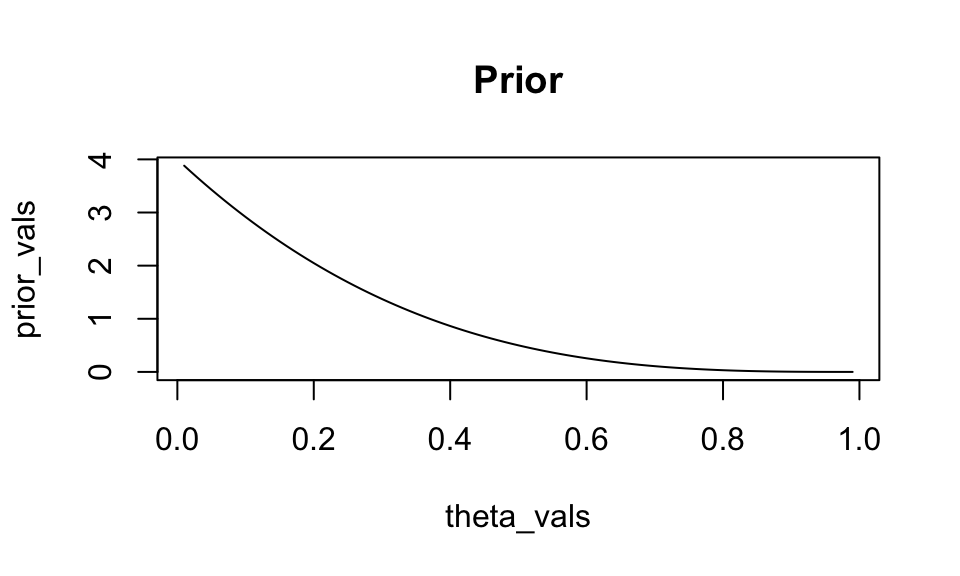
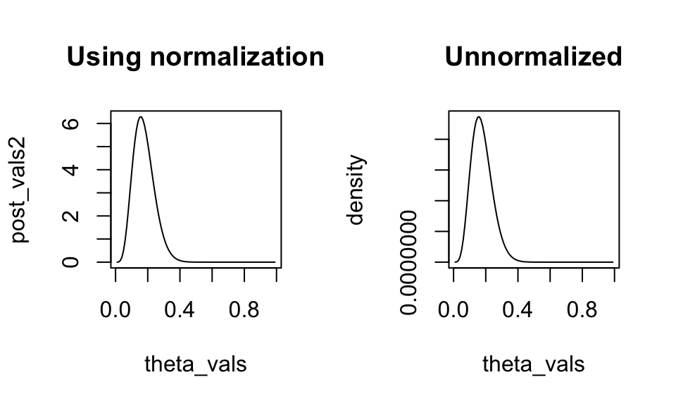

theta_vals <- seq(0.01, 0.99, by = 0.01)
a <- 1
b <- 4
prior_vals <- dbeta(theta_vals, shape1 = a, shape2 = b)
plot(theta_vals, prior_vals, type = "l", main = "Prior")
February 20, 2024
Suppose \(X_{1},\ldots, X_{5}\) form a random sample from a \(\text{Geometric}(\theta)\) distribution, where \(\theta \in (0,1)\) is the unknown probability of success. We can use a Beta prior for \(\theta\): \(\theta \sim \text{Beta}(a, b)\).
Suppose I pick hyperparameter values \(a = 1\) and \(b = 4\). What does this particular distribution look like?
We know the prior is a valid PDF because the Beta distribution is a well known distribution. But let’s double check by using R to verify that that the PDF integrates to 1.
We will write a function called beta_prior that takes in an argument theta as input, and should return the Beta density evaluated at that value of theta and our choice of hyperparameters. Then, we will integrate() our function over its support to see if the PDF in fact integrates to 1.
Now suppose we observe \(X = (3, 7, 3, 5, 6)\).
What is the posterior for \(\theta\) under our \(\text{Beta}(1,4)\) prior given the observed data? From class work, we know:
\[\theta | \mathbf{x} \sim \text{Beta}(1 + n, 4 + \sum_{i=1}^{n} x_{i})\]
Suppose we didn’t know that the posterior is Beta. However, we know that the posterior is always proportional to the likelihood times prior; all we lack is the normalizing constant. So let’s write a function that evaluates the kernel of the posterior (i.e. the posterior up to proportionality), then use it to find the normalizing constant.
post_kernel <- function(theta){
# obtain likelihood for theta under Geometric (up to proportionality)
lh <- 1
for(i in 1:n){
lh <- lh * ((1-theta)^x[i]) * theta
}
# prior (up to proportionality)
prior <- theta^(a-1) * (1-theta)^(b-1)
to_return <- lh * prior
return(to_return)
}
val <- integrate(post_kernel, 0, 1)$val
val[1] 0.0000001504799[1] 0.0000001504799We can see that 1) the posterior obtained through normalization agrees with the analytic result, and 2) the unnormalized posterior has exactly the same shape as the normalized:

Lastly, we can visualize the prior and posterior on the same plot by first creating one plot, then using the lines() function to add additional lines to the original plot.